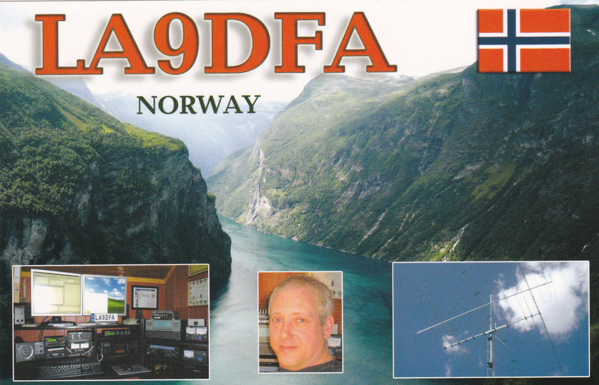
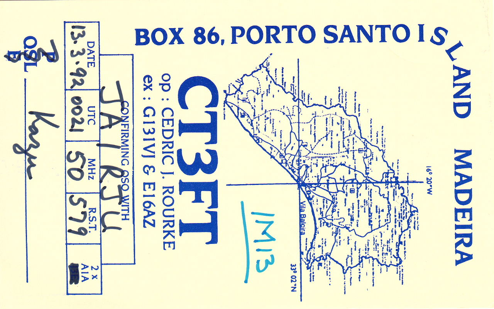

Flash ! DX
|
 


|
|
|
|

|
|
|
[Back Issues Jun.2015]
TIME:UTC(JST-09:00)
Report from JA1RJU(PM95sq)
30.Jun.2015(15:00d)
(K1TOL 22:26 50.086.8 CW into QN03)
K0YW 22:55 50.090.3 CW into QM05
---------------------------------------------------------------
(W5OZI.NW0W.K6QXY.K0GU.KN4OK.K5RK.N5DG.KF6F.W7JW.N6RV.N5TY.K4YMQ
AB4B.K4WS.XE2CQ...etc) into JA1.2.3.4.5.6.7.8.9.0/ 22:22=>03:00z
---------------------------------------------------------------
W3UUM 00:04 50.090.3 CW into QM05/P=>TX
N6TI 00:05 50.083 CW into QM08/CA RST599/599
KZ4RR 00.54 50.083 CW into QM08/FL RST559/599
W5HNK 01:00 50.083 CW into QM08/TX RST559/559
K4PI 01:28 50.083 CW into QM08/GA RST559/449
OH2MA 08:52 50.093 CW
UT4UO 08:54 50.102 CW CQ CQ
Report from JA1RJU(PM95sq)
29.Jun.2015(15:00c)
K0TPP 22:15 50.083 CW into QM08/O RST599/599
W9EWZ 22:25 50.083 CW into QM08/Wi RST559/559
W9DR 22:29 50.083 CW into QM08/FL RST599/559
KN4OK 22:30 50.083 CW into QM08/AL RST559/559
W3RI 23:54 50.083 CW into QM08/AZ RST579/559
--------------------------------------------------------------
W7RV 00:10 50.083 CW into QM08/AZ RST559/539
UN8GC 04:35 50.100 CW
Report from JA1RJU(PM95sq)
28.Jun.2015(15:00d)
6M6M 21:38 50.097 CW CQ NA
BD3OM 23:10 50.085 CW CQ
---------------------------------------------------------
RW0CD 00:00 50.082/21.017 CW X-Band QM08(HRD:21.017MHz)
BG6CJR 01:05 50.106 CW CQ
(IK5--- 08:15 50.084 CW into QM06)
(YO9HP 08:35 50.085 CW CQ weak)
BA2BI 12:43 50.083 CW CQ
Report from JA1RJU(PM95sq)
27.Jun.2015(15:00d)
6M6M 23:35 50.095 CW CQ NA
---------------------------------------------------------
YO9HP 06:27 50.100 CW CQ
YO9HP 06:33 50.100 CW @ RST599/599
LZ2WO 06:36 50.097 CW CQ
HA8FK 06:43 50.080 CW
YO9HP 06:50 50.127 SSB
YO9HP 06:54 50.100 CW (propagation is gone ? 07:00-)
HA8FK 08:18 50.085 CW CQ (TV-BUZZ again!)
Report from JA1RJU(PM95sq)
26.Jun.2015(15:00d)
UN8GC 04:45 50.100 CW into JA6
EX8M 05:18 50.099 CW into JA6
KL7KY 06:03 50.096 CW into QM08/AK RST559/559
KL7HBK 06:24 50.083 CW into QM08/AK RST559/559
I6WJB 07:00 50.085 CW into QM08 RST559/559
(TK5MH 07:01 50.083 CW into QM05=> JA-TK New QSO on 6m Band!)
HA8CE 07:11 50.085 CW into QM08 RST559/559
UN8GC 07:50 50.097 CW CQ
IK5MEJ 07:56 50.074 CW CQ
(EA6VQ 07:58 50.080 CW into JA8)
EA6VQ 08:05 50.085 CW into QM08 RST449/559
(EA6BB 08:08 50.076 CW into JA8)
EA6VQ 08:33 50.080 CW
UW8SM 08:41 50.071 CW into QM08 RST449/559
IK5MEJ 08:45 50.074 CW CQ
IK5MEJ 08:55 50.074 CW
Report from JA1RJU(PM95sq)
25.Jun.2015(15:00d)
DU1MGA 01:02 50.276+0.196 WSJT JT65a CQ -20dB
EX9T 05:46 50.099 CW
UT7QF 06:15 50.102 CW
Report from JA1RJU(PM95sq)
24.Jun.2015(15:00e)
DS4AOW 22:00 50.100 CW CQ
W5OZI 22:29 50.083 CW into QM08/TK RST579/449
K4MM 22:38 50.083 CW into QM08/FL RST579/449
N5DG 22:45 50.083 CW into QM08/TX RST559/449
K4MM 22:46 50.083 CW into QM08/FL RST559/459
K4RX 22:49 50.083 CW into QM08/FL RST579/579
AC4TO 22:52 50.083 CW into QM08/FL RST559/559
N5DG 22:54 50.083 CW into QM08/TX RST559/559
W4AS 22:54 50.083 CW into QM08/FL RST559/559
N5DG 23:00 50.083 CW into QM08/TX RST559/559
BG6CJR 23:27 50.081.5 CW CQ
BA4SI 23:29 50.089.5 CW CQ
------------------------------------------------------
BD4UJ 01:39 50.110 CW CQ
BU4UT 01:50 50.110 SSB CQ
BD4UJ 01:54 50.110 CW
BX3ABH 03:20 50.085 CW CQ
UK8OM 05:05 50.103 CW into JE6
EX9T 05:07 50.098 CW into JA2-JA6
UT7QF 05:39 50.092.5 CW
EX9T 07:44 50.096 CW
(4L1AN 08:30 50.110 CW/SSB into JR6)
|
◎6月22日のオープンに続き、早朝の北米の入感が見られたが、相変わらずオープンのエリアはスポット的で、関東の内陸部ではほとんど信号を確認出来なかった。
今年の”Esマルチホップ”は、まだ期待されたほどのコンデション上昇とはなっていない。 午後のEU方面の入感は、JA6など西日本からBA、DU、9M6、9M2など東南アジア方面への広範囲のオープンとなって、JA本土への入感は弱いものに終わった。 08:20z頃から50.110MHzでGeorgiaの4L1ANがQRVを始め、JA向けにアンテナを回してくれたが、JA4/6の一部で信号が確認されただけで、 先方ではJAの信号を確認する前にQRTしてしまった。Georgiaは既にJAから初QSOは出来ているが、QRVの少ない国なのでオープンしたら混乱は必至。 昨日の状況では、4L1ANはJA局にして好意的に接してくれているので、次回のQRVに期待出来そう。 |
Report from JA1RJU(PM95sq)
23.Jun.2015(15:00c)
BA4SI 23:07 50.088.4 CW CQ
Report from JA1RJU(PM95sq)
22.Jun.2015(15:00d)
KL7HBK 22:47 50.083.5 CW into QM08/AK RST599/599
N5DG 22:58 50.083.5 CW into QM08/TX RST599/579
W3UUM 23:00 50.083.5 CW into QM08/TX RST559/559
W3RM? 23:02 50.083.5 CW into QM08
W9MAF 23:09 50.083.5 CW into QM08/MO RST559/569
K9IL 23:26 50.084.8 CW into JH0/
N6NR 23:36 50.276.0 JT65 into JE6/(HRD)
N3LL 23:40 50.083.5 CW into QM08/FL RST559/559
K5EJ 23:43 50.084.9 CW into PM95
AC4TO 23:45 50.090.3 CW into QM05
K5UR 23:49 50.083.5 CW into QM08/AR RST559/559
AC4TO 23:52 50.083.5 CW into QM08/FL RST559/559
KC0CF 23:53 50.083.5 CW into QM08/IA RST599/599
K5EJ 23:56 50.083.5 CW into JH0/
K0TPP 23:56 50.083.5 CW into QM08/MO RST559/599
K0TPP 23:59 50.090.3 CW into QM05
------------------------------------------------------------------
AB4B 00:00 50.090.3 CW into QM05
NW0W 00:02 50.083.5 CW into QM08/MO RST599/579
NT0V 00:05 50.090.3 CW into QM05
N0CWR 00:11 50.090.3 CW into QM05
KC0CV 00:14 50.096.0 CW into PM95(HRD)
N0LL 00:23 50.103.4 CW into JH0/
K6FV/B 04:11 50.068.8 CW into JE6/
W7EW 04:25 50.090.3 CW into QM05
KY7M 04:36 50.085.6 CW into JE6/
W7EW 04:42 50.054.0 CW into QM08/OR RST579/569
W7EW 04:44 50.054.0 CW into QM08
K6GXO 04:46 50.090.3 CW into QM05
KY7M 04:47 50.086 CW into PM95(HRD)
K6QXY 04:49 50.080.5 CW into QM08/CA RST579/519
BA4SI 04:49 50.088 CW CQ NA
WA7GCS 04:54 50.080.5 CW into QM08/OR RST579/579
BM6GJL 04:57 50.096/088 CW CQ NA
N2NS 04:54 50.090.3 CW into QM05
XE2CQ 05:02 50.099.4 CW into JH0/
K6GXO 05:04 50.095 CW into PM95
K0DI 05:06 50.090.3 CW into QM05
K6QXY 05:06 50.094.9 CW into JE6/(HRD)
XE2CQ 05:07 50.099.5 CW into PM95
K6GXO 05:14 50.086.5 CW into JH0/
XE2CQ 05:17 50.099.4 CW PM95 CQ CQ(HRD)
K0DI 05:19 50.097.0 CW into JH0/
K6GXO 05:22 50.080.5 CW into QM08/CA RST599/569
K7JA 05:24 50.080.5 CW into QM08/CA RST599/569
N6ML 05:33 50.080.5 CW into QM08/CA RST579/449
W2VJN 05:35 50.080.5 CW into QM08/OR RST559/559
N2NS 05:36 50.080.5 CW into QM08/CA RST599/599
BD4UJ 05:43 50.095 CW
K0RG 05:49 50.090.3 CW into QM05
|
◎6月22日の”夏至”のコンデションに期待が寄せられていた”Esマルチホップ”は、期待されたほどのコンデション上昇とはならなかった。 朝の北米方面は早朝からオープンしたものの、入感していたエリアはスポット的なものだった。 JA1(QM05/QM06)/JA7(QM08)など太平洋沿岸に近いエリアではCQに応答してくる北米が比較的多かったものの、 信号は深いQSBを伴いオープンしていた時間の割りにはQSO出来た局は少なかったとのこと。 午前中の北米南東部から中部にかけての入感が終わった後、午後から再び北米西海岸が入感してきた。 この午後のオープンは午前中の入感よりも若干東寄りのスキャッター気味の伝搬だった。 北米の局と同時にメキシコのXE2CQが入感していたが、JA'sのパイルアップにも応答する”気配”は少なく、最後はCQの連発でフェードアウトした。 夕方からのヨーロッパ方面のオープンに期待したが、「PM95」では全くオープンの気配は感じられない。 |
Report from JA1RJU(PM95sq)
21.Jun.2015(15:00d)
VR2XMT 01:13 50.276+0.258 WSJT JT65a CQ -08dB
VR2XMT 01:26 50.276+0.221 WSJT JT65a CQ -22dB
9M6EZ 04:42 50.276-0.509 WSJT JT65a CQ -09dB
9M6EZ 05:18 50.276-0.253 WSJT JT65a CQ -05dB
9M6EZ 05:42 50.276+0.118 WSJT JT65a CQ -06dB
9M6EZ 06:14 50.276-0.046 WSJT JT65a CQ -21dB
Report from JA1RJU(PM95sq)
20.Jun.2015(15:00d)
BG6CJR 01:28 50.093 CW CQ
BV0TW 01:40 50.115 SSB CQ
(CT1HZE 07:57 50.083 CW into QM05)
CT1HZE 08:14 50.088 CW into QM05
S59A 08:58 50.084 CW CQ Gud Sig
(LX1TI 08:49 50.080 CW into QM08)
Report from JA1RJU(PM95sq)
19.Jun.2015(15:00b)
(Es Open to JA8 07:45-)
Report from JA1RJU(PM95sq)
18.Jun.2015(15:00d)
BG1WNU 01:40 50.102 CW CQ
BV3TO 01:45 50.102 CW
HL4RBR 09:30 50.086 CW CQ
Report from JA1RJU(PM95sq)
17.Jun.2015(15:00e)
T8CW 07:16 50.230 RTTY RST599
T8CW 07:39 50.230 RTTY @ RST599/599
T8CW 07:52 50.122 CW @ QSL via JA0FOX
KG6DX 08:10 50.093 CW CQ
DU7/PA0HIP 08:12 50.102 CW CQ QSO with EU/AF(IK/YU.EA8DBM...etc)
DU1KA 08:32 50.098 CW CQ EU
DU1EV/B 08:33- 50.008 CW Beacon
DU1/JA3FJE 09:05 50.120 SSB CQ
DU1/JA3FJE 09:10 50.110 CW CQ
HL2CFY 09:19 50.095 CW CQ
Report from JA1RJU(PM95sq)
16.Jun.2015(15:00c)
VR2XMT 04:51 50.276-0.040 WSJT JT65a CQ -23dB
Report from JA1RJU(PM95sq)
15.Jun.2015(15:00c)
VR2XMT 03:11 50.276-0.137 WSJT JT65a -14dB
VR2XMT 03:21 50.276-0.051 WSJT JT65a CQ -18dB
Report from JA1RJU(PM95sq)
14.Jun.2015(15:00b)
Report from JA1RJU(PM95sq)
13.Jun.2015(15:00b)
◎第44回東北6m SSB Group Meeting in 秋田 開催のお知らせ。
今年は初秋(9/26-9/27)の秋田で「東北6SGミーティング」を開催する運びとなりました。
昨秋の南米オープン、今春のアフリカ、マルチホップ、国内Es...今年はどの話題で盛り上がりましょうか。
詳細は「FLASH NEWS」のページをご覧下さい。
Report from JA1RJU(PM95sq)
12.Jun.2015(15:00d)
DS4AOW 06:09 50.100 CW CQ
AH0I 06:52 50.115 CW @ OP & QSL via JF1IRW
DU7/PA0HIP 07:23 50.099 CW CQ RST599
BA8AG 07:41 50.102 CW CQ
BD6AHU 07:46 50.098 CW CQ
BA8AT 08:00 50.096 CW CQ RST599
VR2CO 08:35 50.100 CW CQ
Report from JA1RJU(PM95sq)
11.Jun.2015(15:00b)
Report from JA1RJU(PM95sq)
10.Jun.2015(15:00c)
DS3BNU 01:40 50.100 CW CQ
KG6DX 07:30 50.093 CW CQ EU
Report from JA1RJU(PM95sq)
09.Jun.2015(15:00d)
BV3TO 03:30 50.101 CW CQ
DS3BNU 03:32 50.130 SSB CQ
BX3AA/QRP 03:35 50.102 CW CQ (Es JA4-JA6 & JA8)
BG4DRL 03:57 50.276+0.215 WSJT JT65a -08dB
Report from JA1RJU(PM95sq)
08.Jun.2015(15:00b)
QST誌6月号で"Silent Keys"と報じられたCT3FT Cedric。1992年3月に大西洋のマデイラ諸島(Madieira)から
アクティブにQRVしてロングパスでJAに良く入感していた。ご冥福をお祈りします


Report from JA1RJU(PM95sq)
05ｰ07.Jun.2015(00:00a)
FEDXP総会（沖縄・那覇市）出席のためDXリポートは休止します。
Report from JA1RJU(PM95sq)
04.Jun.2015(15:00b)
Report from JA1RJU(PM95sq)
03.Jun.2015(15:00d)
BG4DRL 04:02 50.276-0.313 WSJT JT65a CQ -08dB
BG4DRL 04:04 50.276-0.000 WSJT @ JT65a -04dB/-08dB (20W)
Report from JA1RJU(PM95sq)
02.Jun.2015(15:00f)
DU1EV/B 04:50- 50.008 CW Beacon
VR2UW 06:37 50.099 CW CQ DX
SV1DH 06:42 50.102 CW CQ
SV1DH 06:58 50.102 CW @ RST579/559
SV1DH 07:00 50.150 SSB QSY to SSB
SV1DH 07:07 50.147 SSB @ RS59/55
SV1DH 07:10 50.147 SSB CQ CQ JA !...QSY
S57RR 07:23 50.088 CW CQ JA!
IK5ACO 07:31 50.083 CW weak
VR2XMT 08:30 50.276-0.070 WSJT JT65a CQ -11dB (Ant West)
VR2XMT 08:38 50.276 WSJT @ JT65a -05dB/-01dB (Ant Front=20W)
BM6GJL 09:14 50.105 CW
Report from JA1RJU(PM95sq)
01.Jun.2015(15:00c)
BM6GJL 03:14 50.105 CW CQ
HL3EQG 03:15 50.105 CW
VU2RBI 05:12 50.099 CW
VU2RBI 05:18 50.099 CW @ RST599/599
HL3DE 05:27 50.099 CW QRM
UK8OM 06:05 50.097 CW
VU2RBI 06:10 50.099 CW still good!
-------------------------------------------------------------
5B4MF 0727Z 50101.8 CW CQ JR6EXN
5B4MF 0751Z 50102.0 thanks QSB 579 JA7QVI
-------------------------------------------------------------
VU2RBI 08:29 50.099 CW into QM06
SV1DH 09:17 50.106 CW into QM06
-------------------------------------------------------------
9M2TO 1022Z 50107.0 CW CQ JA6TEW
LZ2WO 1200Z 50097.8 CW CQ 519 with QSB JR6EXN
UT7QF 1227Z 50102.0 CW CQ JR6EXN
UT7QF 1230Z 50102.0 559 QSB JA6TEW
UR5LAK 1304Z 50083.4 cq had ,deep qsb JE6AZU
LZ2WO 1323Z 50095.0 559nw JR2HCB
LZ2WO 1324Z 50095.0 599 FB intoPM53 JA6TEW
UT5ID 1345Z 50100.0 559 JR2HCB
UT7QF 1348Z 50120.0 SSB 59 with QSB JR6EXN
UR5LAK 1355Z 50083.4 CW CQ JR6EXN
SV2JAO 1359Z 50091.9 cq hrd JE6AZU
UT7QF 1402Z 50110.0 SSB CQ DX JR6EXN
SV2JAO 1405Z 50092.0 CW CQ JR6EXN
-------------------------------------------------------------

 6mでアクティブにQRVした3B9FR・Robart(本人から届いたQSL) |